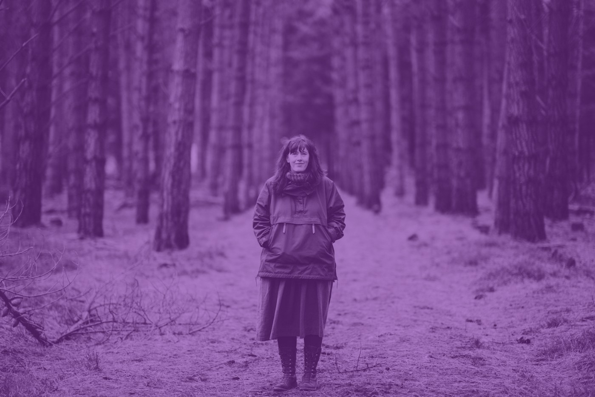
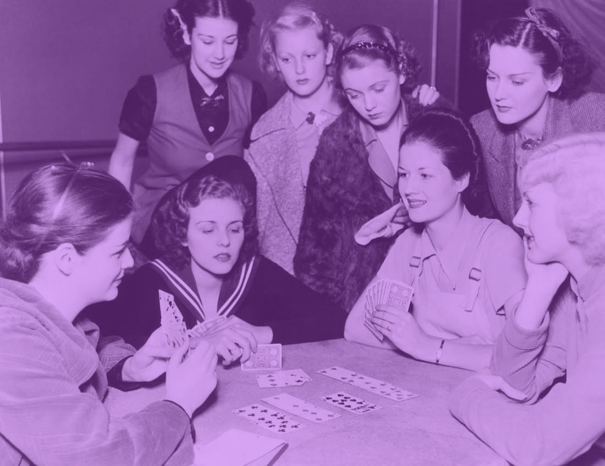
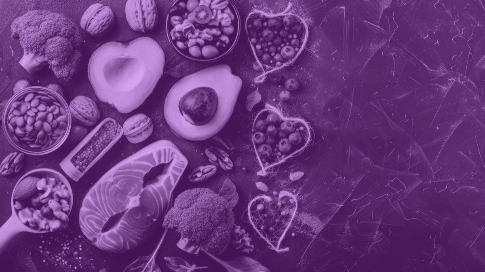
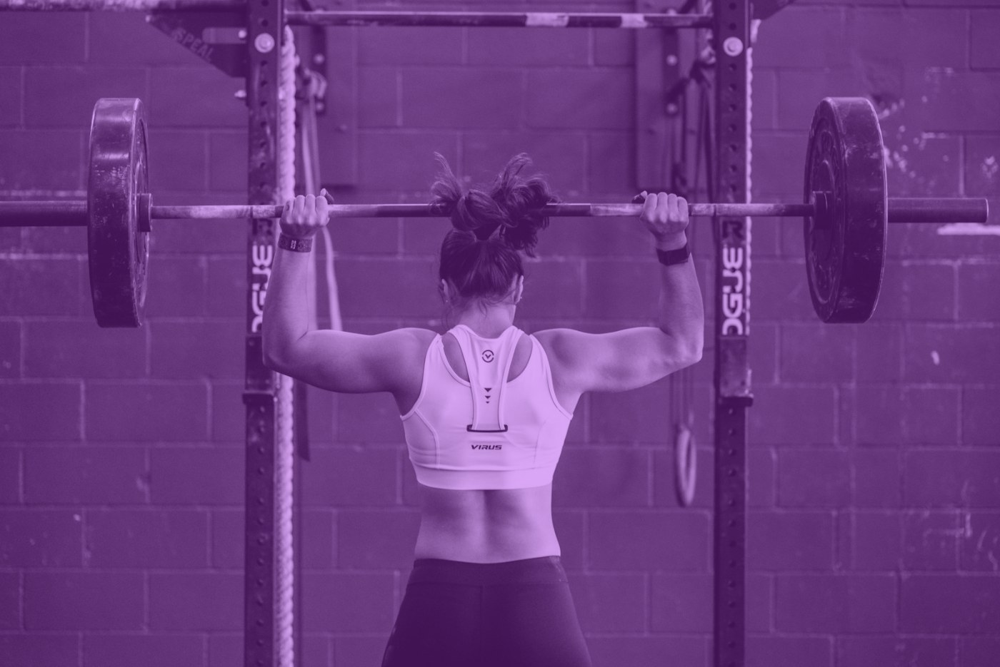
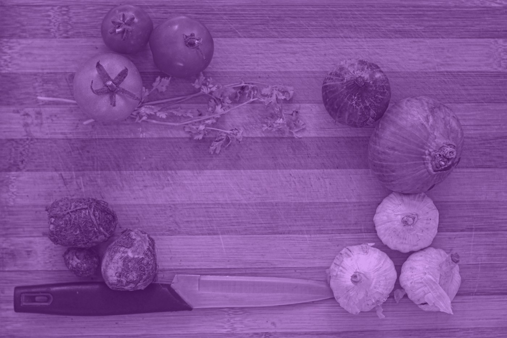

Healthy Longevity Clinic
Klinika geriatrie a interní medicíny 1. LF UK a VFN
III. interní klinika – klinika endokrinologie a metabolismu 1. LF UK a VFN
Klinika geriatrie a interní medicíny 1. LF UK a VFN
III. interní klinika – klinika endokrinologie a metabolismu 1. LF UK a VFN
Ženské zdraví · Dlouhověkost
Ženská dlouhověkost v éře longevity medicíny
Měsíční i celoživotní rytmus, a co s ním umíme dělat
Mgr. Ing. Tereza Vágnerová, Ph.D.

Proč vůbec
Stárnutí je největším rizikovým faktorem většiny chronických onemocnění.
Začíná dávno předtím, než ho poznáme na sobě. Proto se o něm bavíme ve třiceti, ne až v padesáti pěti.
02
Délka versus kvalita
Ženy se dožívají déle. Delší část života ale prožijí ve zhoršeném zdraví.
Kohortová studie
18,6
let s aktivním omezením nebo zhoršeným zdravím
82,0
let naděje dožití žen v ČR
63,4
let z toho ve zdraví (healthy life years at birth)
50,7
% populace ČR tvoří ženy
Eurostat 2018, Czechia (ženy: 82,0 / 63,4 roku) · ČSÚ, 2021. Hodnota 62,7 roku je zdravá délka života celé populace ČR, ne žen.
03

Část první
Medicína ženy dlouho nestudovala.
Proto u části doporučení pro ženy dodnes chybí data.
Bias v medicíně
Ženy byly z klinických studií systematicky vylučovány přibližně do roku 1993.
1940–70
Ženy jsou z klinických studií téměř vyloučeny. Důvod: obavy z těhotenství a z „nestabilních hormonů“.
1977
FDA zakazuje účast žen ve fertilním věku v raných fázích klinických studií.
80. léta
Většina studií, včetně kardiovaskulárních, onkologických a hormonálních, jen s muži.
1990
Report o vlivu diety na estrogenový metabolismus. Všichni účastníci byli muži.
1993
NIH Revitalization Act. Zapojení žen a menšin do studií se stává povinným.
National Cancer Institute, 1990 · NIH Revitalization Act, 1993 · podreprezentace přetrvává v kardiologii a farmakokinetice
05
Rozdíly mezi pohlavími
Infarkt u ženy vypadá jinak než u muže.
Dobrým příkladem, proč je nutné rozdíly studovat, je samotné „nemocnění“: jak muži a ženy stonají.
Kohortová studie
U mužů
Pláty ve velkých koronárních tepnách hned po odstupu z aorty. Uzávěr přední sestupné větve bývá fatální.
U žen
Častěji difuzní mikrovaskulární postižení: narušený endotel a mikrocirkulace v malých cévách hluboko ve svalovině srdce.
Důsledek: netypické příznaky, a proto pozdější diagnóza i léčba. Kritéria vznikla na mužských kohortách.
06

Část druhá
Ženské tělo pracuje v cyklech. Měsíčních i celoživotních.
Hormonální změny ovlivňují metabolismus, imunitu, mozkové funkce, regeneraci i výkonnost. Jsou předvídatelné, a proto se s nimi dá pracovat.
07
Celoživotní cyklus
Od menarché po postmenopauzu jde o jednu kontinuitu, ne o řadu krizí.
Reprodukční období
Postmenopauza
102030405060708090100 let
Puberta
první menstruace ~13 let
první menstruace ~13 let
Reprodukční období
premenopauza, nejdelší fáze
premenopauza, nejdelší fáze
Perimenopauza
začátek ~47 let, trvá 4,5–8,5 roku
začátek ~47 let, trvá 4,5–8,5 roku
Postmenopauza
od menopauzy, medián 51,4 let
od menopauzy, medián 51,4 let
08
Premenopauzální cyklus
Cyklus trvá 25 až 35 dní a má tři fáze.
Folikulární fáze
PŘIBLIŽNĚ DEN 1–13
Rostou a dozrávají folikuly. Estrogen postupně stoupá, progesteron zůstává nízký.
Ovulace
PŘIBLIŽNĚ DEN 14
Vrchol estrogenu. Subjektivně bývá nejlepší výkon.
Luteální fáze
PŘIBLIŽNĚ DEN 15–28
Progesteron stoupá a drží se vysoko. Trvá 12 až 14 dní.
09
Co se v cyklu mění
Estrogen a progesteron se nestřídají náhodně.
Den 17142128
Menstruace, den 1–5. Nejnižší estrogen, subjektivně nejhorší výkon i spánek.
Ovulace, den 14. Vrchol estrogenu, nejlepší tolerance zátěže.
Pozdní luteální fáze. Vyšší bazální teplota, o 0,3–0,7 °C.
10
Folikulární fáze
Menstruace je fyziologicky zdravý projev hormonální rovnováhy.
Absence menstruace v reprodukčním věku není optimalizace. Bývá znakem energetického deficitu nebo endokrinní nerovnováhy, a nese vysoká rizika.
Odborný konsenzus
11
Co se v první polovině cyklu děje
Tělo se po menstruaci regeneruje a připravuje na ovulaci.
Kohortová studie
Síla a výkon
Střední až pozdní folikulární fáze a ovulace jsou mírně výhodnější pro sílu. Estrogen působí antikatabolicky a podporuje syntézu svalových bílkovin. Vhodné období pro progresi zátěže a pro náročnější kognitivní úkoly.
Spánek
Pozdní folikulární fáze je v průměru klidnější období: méně probouzení, méně nespavosti. Rozdíly jsou větší v kvalitě spánku než v jeho délce.
Metabolismus
Vyšší inzulinová senzitivita v periferních tkáních i v mozku. Změna je malá, ale konzistentní. Tělo efektivněji využívá glukózu.
CAVE: vysoká interindividuální variabilita. Platí vzorec, ne předpis.
12

Výživa v první polovině cyklu
Základ je dost energie, ne dokonalý jídelníček.
Energie. Ne pod 30 kcal/kg tukuprosté masy za den. Pravidelný cyklus vyžaduje dostupnou energii.
Bílkoviny 1,2–1,6 g/kg, podle stavu až 2,2 g/kg. Maximální efekt vrcholí už u 1,2 g/kg. Nejsou samospásná živina ani hlavní zdroj energie.
Sacharidy 45–55 % energie. Tělo je v této fázi využívá efektivněji.
„Proestrogenní“ potraviny jako lněná semínka nebo kimchi účinnost ve studiích neprokázaly.
Odborný konsenzus
13
Při menstruaci
Nastavení stravování je vysoce individuální.
Mechanistické
Z jídla
- Vitamin D a omega-3: tučné ryby, žloutky, lněné semínko, vlašské ořechy
- Magnesium: ořechy, dýňová a slunečnicová semínka, celozrnné, kakao
- Vápník: zakysané výrobky, sardinky s kostí, mák, sezam
- Zinek a selen: semínka, vejce, para ořechy
- Vitamin B1, B6, E: oves, banány, avokádo, olivový olej
- Železo při silné menstruaci nebo nízkém příjmu
Případná suplementace
- Drmek obecný normalizuje luteální fázi, zmírňuje PMS a napětí v prsou
- Kurkumin působí protizánětlivě a analgeticky
- Inositol pomáhá u PMS, PMDD a PCOS
- Kreatin monohydrát zvyšuje fyzický i kognitivní výkon
Vynechávání jídel, redukční diety a nízký příjem antioxidantů naopak zvyšují riziko menstruačních křečí.
14
Druhá část cyklu
V druhé polovině cyklu jde tělo do jiného režimu.
Výkon zůstává stabilní. Mění se to, jak namáhavý se vám zdá.
Kohortová studie
- Bazální teplota vyšší o 0,3–0,7 °C, vyšší dechová i srdeční frekvence, nižší tolerance tepla
- Nižší inzulinová citlivost a mírně vyšší glykemie, efekt je ale malý
- Vyšší vnímání námahy bez skutečného poklesu výkonu
- Katabolický účinek progesteronu zvyšuje potřebu bílkovin
- Progesteron ovlivňuje GABA a serotonin: PMS, PMDD, podrážděnost. Účinek je vysoce individuální
15
Luteální fáze v praxi
Tělo v této fázi sahá víc po tucích. Vyjděte mu vstříc.
Odborný konsenzus
Výživa
Bílkoviny spíše u vyšší hranice 1,2–1,6 g/kg. Zdravé tuky: ořechy, semena, avokádo, olivový a lněný olej, tučné ryby. Komplexní sacharidy vyrovnávají glykemii.
Trénink
Některým ženám prospěje nižší intenzita nebo frekvence a důraz na regeneraci. Dbejte na tekutiny, při silném pocení na elektrolyty. Vysledujte to na sobě.
Spánek
Relaxační rutina před spaním, pravidelný režim a chladnější ložnice, protože tělesná teplota je vyšší.
16
PMS a PMDD
Doplňky pomáhají jen u mírných až středně závažných obtíží.
Mechanistické
Má oporu
- myo-inositol
- vápník, magnesium
- vitamin B6, vitamin D
- drmek obecný
- kurkumin, rybí olej
Nejednotné
- šafrán
- vitamin E
- olej z pupalky dvouleté
- třezalka tečkovaná
Pozor
Doplňky nenahradí režim ani nápravu nutričního deficitu. Třezalka má klinicky významné interakce s hormonální antikoncepcí a antidepresivy. Vždy konzultujte.
Ashwagandha: doložený efekt na kortizol a úzkost · melatonin: kvalita spánku u poruch spánku
17
Premenopauzální období
Neporovnávejte se. Sledujte odchylky od své vlastní normy.
Norma není fixní číslo, ale rytmus. Cílem není ideální křivka hormonů, ale rozumět své oscilaci.
Co si zapisovat
- délku cyklu a intenzitu krvácení
- příznaky PMS
- energii, náladu, spánek
- výkon ve sportu a vnímanou námahu
- ideálně bazální teplotu a HRV
Pak porovnávejte cykly mezi sebou: kdy máte nejvíc energie, kdy se zhoršuje spánek nebo nálada.
18
Část třetí
Perimenopauza není porucha. Je to přechod, který trvá roky.
A protože trvá roky, dá se na něj připravit. Nejlépe předtím, než začne.
19
Co kdy začíná
Přechod je dlouhý. Menopauza je jen jeden den v něm.
Kohortová studie
~47 let
začátek perimenopauzy
Časná fáze: změna délky cyklu o 7 a více dní. Pozdní fáze: interval bez menstruace 60 a více dní.
4,5–8,5
roku trvá přechod
Hormonální výkyvy, které mohou být doprovázeny výraznými příznaky. Nejtěžší je právě toto kolísání.
51,4
medián menopauzy (let), běžně 45–55
Definována 12 měsíci od poslední menstruace. Projevuje se hypoestrogenémií a zvýšeným FSH.
Menopauza mezi 40.–45. rokem: „časná menopauza“ · pod 40 let: primární ovariální insuficience. Obojí zvyšuje riziko KVO, ztráty kostní hmoty a kognitivních poruch.
20
Běžné příznaky
Návaly horka nejsou výjimka. Má je většina žen.
Kohortová studie
75–80 %
žen má vazomotorické symptomy
Náhlé pocity tepla, často s pocením a zrudnutím. K tomu noční pocení.
Co dál se mění
nespavost a časté probouzení
výkyvy nálad
zapomnětlivost, potíže se soustředěním
vaginální suchost, snížené libido
změna tělesného složení: méně svalů, více tuku
bolesti kloubů a prsou
menstruační migrény
řídnutí vlasů, sušší kůže
Rizika období: 2–4× vyšší riziko depresí, vyšší riziko demence a osteoporózy, po menopauze rostoucí kardiovaskulární riziko. U žen s těžkými symptomy výrazně vyšší riziko snížené pracovní schopnosti.
Podíl 75–80 % podle kohorty a definice symptomu · údaj o 8násobném riziku snížené pracovní schopnosti čeká na doplnění zdroje
21
Jak to na sebe navazuje
Návaly nejsou jen nepohodlí. Spouštějí řetěz.
Prerekvizita
Návaly horka a noční pocení
Vazomotorické symptomy, 75–80 % žen.
→
Hlavní předmět
Spánková deprivace a výkyvy nálad
Poruchy spánku má 30–60 % žen ve středním věku, 15–25 % splňuje kritéria insomnie.
→
Důsledek
Narušené stravování a změna složení těla
Příjem o 308 kcal/den vyšší a při stravě ad libitum nárůst viscerálního tuku o 11 %.
Covassin et al., JACC 2022, 14 dní spánku 4 h vs 9 h, n = 12 zdravých dospělých, strava ad libitum. Menopauza mění i rozložení tuku: ubývá na bocích, přibývá v pase.
22
Spánek a hubnutí
Stejný úbytek na váze. Úplně jiný výsledek.
Randomizovaná studie
5,5 h spánku
14 dní
0,6 kg
2,4 kg svalové hmoty
8,5 h spánku
14 dní
1,4 kg tuku
1,5 kg svalové hmoty
úbytek tukové hmoty
úbytek svalové hmoty
Celkem 2,9–3,0 kg v obou skupinách.
Nedeltcheva et al., Ann Intern Med 2010, randomizovaná zkřížená studie, n = 10 (3 ženy), 14 dní kalorické restrikce · jedna noc bez spánku snížila svalovou proteosyntézu o 18 % (Lamon et al., 2021)
23
Neurologický přechod
Menopauza je i přechod mozku. Jinak hospodaří s energií.
„Poruchy spánku představují rizikový a patogenetický faktor rozvoje demence.“
„Ztráta ovariálních hormonů může ovlivňovat kognici přímo, ale pravděpodobně i nepřímo, prostřednictvím poruch spánku.“
Estrogen kognitivní funkce chrání. Alzheimerova choroba je u žen častější než u mužů. Nejtěžší je právě perimenopauzální kolísání.
Kohortová studie
24
Kosti
Kost neubývá plynule. Ubývá ve dvou vlnách.
Kohortová studie
1. fáze, perimenopauza. Nedostatek estrogenu zvyšuje odbourávání kosti.
2. fáze, 4 až 8 let po tranzici. Zpomaluje se novotvorba kostní hmoty.
Proto zátěž a materiál. Silový trénink, vápník, vitamin D, K2 (MK-4), bílkoviny, kreatin.
25
Jakou roli hraje výživa
Změna jídelníčku dokáže návaly zmírnit. I při HRT.
Randomizovaná studie
Více toho
- celozrnné obiloviny: oves, žito, ječmen, pohanka, hnědá rýže, quinoa
- brukvovitá, listová a barevná zelenina
- sója a zdroje isoflavonoidů: tofu, tempeh, edamame
- bobulové ovoce, citrusy, peckoviny
- 30 různých druhů rostlin týdně kvůli mikrobiomu
Méně toho
- procesované tuky
- kofein a alkohol: alkohol zhoršuje návaly i noční pocení
- pálivá jídla a kari
- ultrazpracované potraviny, velké množství cukru a sodíku
Efekt byl větší u žen, které současně zredukovaly hmotnost. Cholesterol si nechte změřit minimálně každé 2 roky.
Rutinu si ideálně nastavte před vstupem do menopauzy. Se zvyšujícím se věkem význam jídelníčku dále roste.
26

Pohyb a stavební materiál
Odporový trénink není doplněk. Je to léčba.
150
minut středně až vysoce intenzivní aerobní aktivity týdně, postupně 30 minut 4–5 dní v týdnu
2×
týdně odporový trénink: 2 série po 8–12 opakováních, nejvýše 8–10 cviků na lekci
10–30
sekund výdrž ve statickém strečinku, 2–4 série, ideálně 5–7 dní v týdnu
Efekt je dávkově závislý: intenzita a zátěž jsou důležitější než délka trvání. K tomu vápník, vitamin D, K2 (MK-4), bílkoviny 1,2–1,6 g/kg a kreatin monohydrát.
Metaanalýza a RCT
27

Dlouhověkost nezačíná v menopauze. Začíná dávno před ní.
Každá fáze, od menarché po postmenopauzu, je součástí kontinuity, ne krize. Rozhoduje příprava: znalost vlastního těla, prevence a porozumění rytmu.
28

Děkuji za pozornost.
Mgr. Ing. Tereza Vágnerová, Ph.D.
Healthy Longevity Clinic
Klinika geriatrie a interní medicíny 1. LF UK a VFN
III. interní klinika – klinika endokrinologie a metabolismu 1. LF UK a VFN
EFAD – European Federation of the Associations of Dietitians
Healthy Longevity Clinic
Klinika geriatrie a interní medicíny 1. LF UK a VFN
III. interní klinika – klinika endokrinologie a metabolismu 1. LF UK a VFN
EFAD – European Federation of the Associations of Dietitians
tereza.vagnerova@lf1.cuni.cz · +420 774 355 768